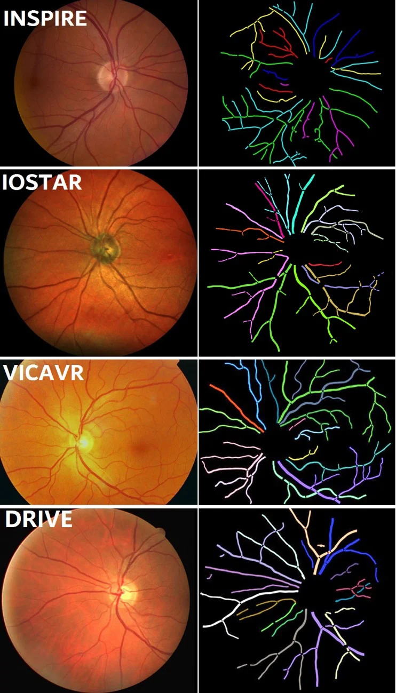

VETO：VEssel TOpology groundtruth
These data set are released for academic research use only.
Download
https://doi.org/10.5281/zenodo.12778666
Dataset Description
We have labeled the vessel topology on four public-available retinal datasets:
- INSPIRE [1]
- VICAVR [2]
- IOSTAR [3]
- DRIVE [4]
Two experts were asked to manually label the topological information of the retinal vascular structure by using a graph editing software we developed for this task. Expert one and two independently labeled each vessel segment or centerline for all datasets, based on the types of available manual annotations of the vessel structure. Then the consensus between them was released for public use.
It is worth noting that the vessel segments or vessel centerlines were used for topology estimation were extracted either by human grader or automatic vessel segmentation method, i.e. the DRIVE and IOSTAR datasets include the manual annotations of retinal vessel for each image, so the topology reconstruction were performed at manual annotated vessel patterns; for VICAVR datasets, the topology estimation were performed at the automatic segmented vessels by using the automated segmentation method [5]; for INSPIRE dataset, the human expert graded the topology at the vessel centerline which were provided by [6].

Figure 1. Examples of vascular topology groundtruth of four datasets.
- M. Niemeijer, X. Xu, A. Dumitrescu, B. van Ginneken, J. Folk, and M. Abràmoff, “Automated measurement of the arteriolar-to-venular width ratio in digital color fundus photographs,” IEEE Trans. Med.Imaging, vol. 30, no. 11, pp. 1941–1950, 2011.
- S. G. Vázquez, B. Cancela, N. Barreira, G. C. de Tuero, M. A. Barceló, and M. Saez, “Improving retinal artery and vein classification by means of a minimal path approach,” Mach. Vis. Appl., vol. 24, no. 5, pp. 919– 930, 2013.
- J. Zhang, B. Dashtbozorg, E. J. Bekkers, J. P. W. Pluim, R. Duits, and B. M. ter Haar Romeny, “Robust retinal vessel segmentation via locally adaptive derivative frames in orientation scores,” IEEE Trans. Med. Imaging, vol. 35, pp. 2631–2644, 2016.
- J. Staal, M. D. Abràmoff, M. Niemeijer, M. A. Viergever, and B. van Ginneken, “Ridge-based vessel segmentation in color images of the retina,” IEEE Transactions on Medical Imaging, vol. 23, pp. 501–509, 2004.
- Y. Zhao, L. Rada, K. Chen, , and Y. Zheng, “Automated vessel segmentation using infinite perimeter active contour model with hybrid region information with application to retinal images,” IEEE Trans. Med. Imaging, vol. 34, no. 9, pp. 1797–1807, 2015.
- R. Estrada, C. Tomasi, S. Schmidler, and S. Farsiu, “Tree topology estimation,” IEEE Trans. Pattern Anal. Mach. Intell., vol. 37, no. 8, pp. 1688–1701, 2015.
Reference
Please cite our paper for any kind of usage:
- Y Zhao, Ji Xie, H Zhang, Y Zheng, Y Zhao, H Qi, Y Zhao, P Su, J Liu and Y Liu. Retinal Vascular Network Topology Reconstruction and Artery/Vein Classification via Dominant Set Clustering, IEEE Transactions on Medical Imaging, 39(2): 341-356, 2020.
- Y Zhao, J Xie, P Su, Y Zheng, Y Liu, J Cheng, J Liu, Retinal artery and vein classification via dominant sets clustering based vascular topology estimation, MICCAI, 2018, Granada, Spain.